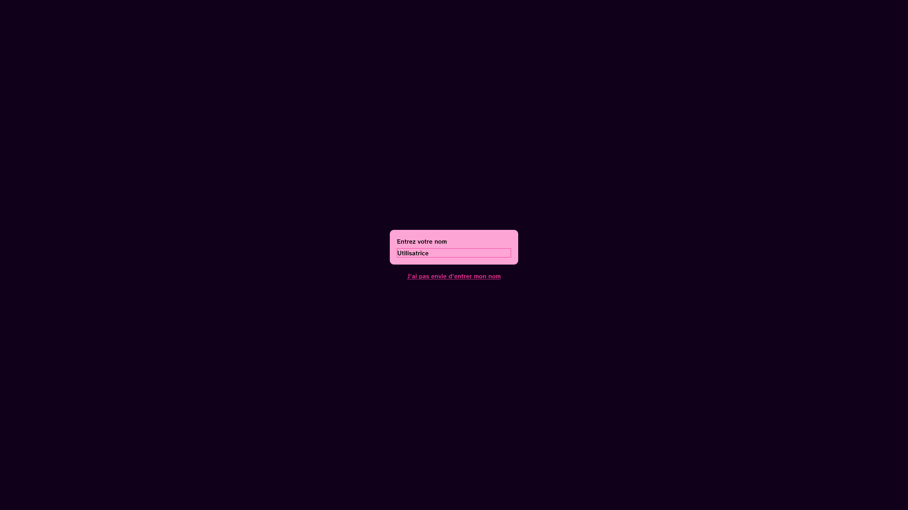
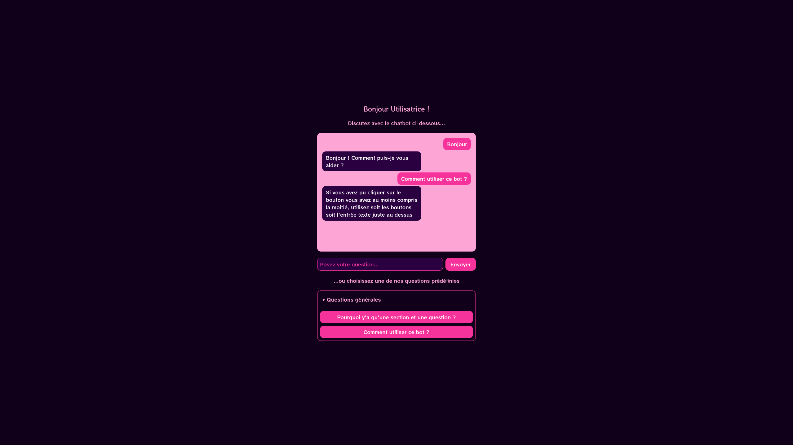

Chatbot déterministe
Technologies utilisées
Nous utiliserons ici le langage Rust pour le backend, en utilisant principalement le module axum qui fera ici office de serveur HTTP pour afficher les pages HTML ainsi que les interactions nécessitant une certaine logique, comme poser une question au bot. Le frontend est développé en HTMX, qui permet notamment d'aisément envoyer des requêtes HTTP directement depuis du HTML et utilise Tailwind CSS afin de pouvoir rapidement prototyper une interface convenable.
Comment marche-t-il ?
Le bot fonctionne d'une manière relativement simple. Lorsque l'utilisateur pose une question, celui-ci cherche d'abord dans les questions prédéfinies voir si celle-ci en fait partie dans le but de récupérer la réponse prédéfinie associée ; c'est essentiellement le cas des questions associées aux boutons qui sont directement récupérées depuis la base de connaissances les contenant. Si le programme ne trouve pas de question prédéfinie, alors celui-ci cherche si un mot contenu dans la question est présent dans une liste de déclencheurs pouvant déclencher telle ou telle réponse. L'ordre de priorité est donc défini par l'ordre dans lequel les questions sont insérées dans le fichier JSON les contenant.
Implémentations
Premier jet
Voici à quoi ressemble le prototype non fonctionnel du bot, avant de lui donner la FAQ à "manger".
{kind=link}

{kind=link}

L'algorithme de sélection actuel, peu développé, ressemble à ceci.
pub fn trouver_reponse(message: &str, data: &ResponsesData) -> String {
for section in &data.sections {
for question in §ion.questions {
if message.to_lowercase() == question.bouton.to_lowercase() {
return question.reponse.clone();
}
}
}
for libre in &data.reponses_libres {
for declencheur in &libre.declencheurs {
if message.to_lowercase().contains(&declencheur.to_lowercase()) {
return libre.reponse.clone();
}
}
}
"Je ne peux pas répondre à cette question.".to_string()
}
Implémentation finale
Nous avons implémenté une solution de traçage des performances et de journalisation avec tracing. Cette solution s'intègre avec des outils tels que la crate log, tracing-opentelemetry, tracy, qui garantissent une bonne intégration avec des outils de déploiement tels que Prometheus ou Grafana.
La sortie du programme ressemble de manière générale à ceci :
[2026-03-18T14:38:46Z INFO tracing::span] Chargement des réponses depuis le fichier Json;
[2026-03-18T14:38:46Z TRACE tracing::span::active] -> Chargement des réponses depuis le fichier Json;
[2026-03-18T14:38:46Z TRACE tracing::span::active] <- Chargement des réponses depuis le fichier Json;
[2026-03-18T14:38:46Z TRACE tracing::span] -- Chargement des réponses depuis le fichier Json;
Serveur lancé sur http://localhost:3000
[2026-03-18T14:38:50Z TRACE axum::serve] connection 127.0.0.1:54216 accepted
[2026-03-18T14:38:55Z INFO tracing::span] Génération et envoi de la réponse vers le front;
[2026-03-18T14:38:55Z TRACE tracing::span::active] -> Génération et envoi de la réponse vers le front;
[2026-03-18T14:38:55Z INFO tracing::span] Recherche d'une réponse adaptée;
[2026-03-18T14:38:55Z TRACE tracing::span::active] -> Recherche d'une réponse adaptée;
[2026-03-18T14:38:55Z TRACE tracing::span::active] <- Recherche d'une réponse adaptée;
[2026-03-18T14:38:55Z TRACE tracing::span] -- Recherche d'une réponse adaptée;
[2026-03-18T14:38:55Z TRACE tracing::span::active] <- Génération et envoi de la réponse vers le front;
[2026-03-18T14:38:55Z TRACE tracing::span] -- Génération et envoi de la réponse vers le front;
Le code est également optimisé pour éviter au maximum de cloner des valeurs en mémoire et utilise RwLock pour éviter les courses à l'écriture entre threads. Quant à l'algorithme de "réponse", il a été modifié pour se baser sur un système interne de "score", en attribuant des points à certaines propositions de réponse. Cela nous donne le code suivant :
fn trouver_reponse(
&self,
message: &str,
derniere_question: &RwLock<Option<String>>,
) -> Option<String> {
let msg = message.to_lowercase();
let _span = span!(
Level::INFO,
"Keyword Finder : Recherche d'une réponse adaptée"
);
let _guard = _span.enter();
info!("Message reçu : {}", message);
if ["hein", "quoi", "comment", "pas compris"]
.iter()
.any(|w| msg.contains(w))
&& let Some(q) = derniere_question.read().unwrap().as_ref()
{
return Some(format!("Je pensais que vous demandiez : \"{q}\""));
}
for reponse_libre in &self.responses.reponses_libres {
for declencheur in &reponse_libre.declencheurs {
if msg.contains(declencheur) {
info!("Match réponse libre : {}", declencheur);
return Some(reponse_libre.reponse.clone());
}
}
}
let mut best_score = 0;
let mut best_answer: Option<&String> = None;
let mut best_question: Option<&String> = None;
let message_mots = nettoyer(message);
info!("Mots-clés du message : {:?}", message_mots);
for section in &self.responses.sections {
for question in §ion.questions {
let mut score = 0;
let question_mots = nettoyer(&question.bouton);
for mot in &message_mots {
if question_mots.contains(mot) {
score += 1;
}
}
if score > best_score {
best_score = score;
best_answer = Some(&question.reponse);
best_question = Some(&question.bouton);
}
}
}
info!(
"Meilleur score : {} pour \"{}\" en réponse à \"{}\"",
best_score,
best_answer.unwrap_or(&"Inconnu".to_string()),
best_question.unwrap_or(&"Inconnu".to_string())
);
if best_score >= 2 {
*derniere_question.write().unwrap() = best_question.cloned();
return best_answer.cloned();
}
None
}
trait, soit une sorte d'interface propre au Rust. Cela nous permet ainsi d'implémenter plusieurs structures dont la logique de recherche de réponses seront différentes, tout en respectant le principe d'extensibilité ; nous pourrions comparer cette approche avec, notamment, le pattern dit "builder".
L'algorithme de keyword matching que nous avons développé repose sur une approche en deux temps pour maximiser les chances de trouver une réponse pertinente. Lorsqu'un utilisateur soumet une question, le système commence par interroger la base de réponses libres, qui contient des déclencheurs associés à des réponses prédéfinies. Cette première passe permet de capturer les salutations, les remerciements et autres formulations courantes qui ne nécessitent pas une analyse poussée du contenu.
Si aucune correspondance n'est trouvée dans les réponses libres, l'algorithme procède alors à une analyse plus fine du message en le découpant en mots-clés significatifs. Cette étape de nettoyage consiste à mettre le texte en minuscules, retirer les caractères spéciaux et filtrer les mots-outils peu pertinents comme les articles ou les déterminants. Chaque mot restant est ensuite comparé aux mots-clés extraits des questions prédéfinies de la base de connaissances.
Le cœur du système repose sur un mécanisme de scoring qui attribue des points à chaque question en fonction du nombre de mots-clés communs avec la requête de l'utilisateur. La question obtenant le meilleur score est sélectionnée, à condition que ce score atteigne un seuil minimal de deux correspondances. Ce seuil garantit que la réponse proposée n'est pas le fruit d'une coïncidence fortuite, mais reflète une véritable similarité sémantique entre la question posée et la question de référence.
Pour enrichir l'expérience utilisateur, le système conserve en mémoire la dernière question traitée, ce qui lui permet de reformuler son incompréhension lorsque l'utilisateur signale ne pas avoir saisi la réponse précédente. Cette fonctionnalité nous sert donc, dans ce contexte, de garde-fou en cas de réponse incorrecte.
Conclusions
L'implémentation d'une solution de mots-clefs pour une telle solution se révèle fortement insuffisante, du fait de plusieurs facteurs ; nous pourrions ainsi évoquer la faiblesse du jeu de données sur lequel l'algorithme se base, qui gagnerait à être étoffé. De plus, cette solution reste globalement inefficace dans le cadre d'une conversation avec une personne ; le chatbot a du mal à attribuer les points ou ne peut simplement pas répondre, même après "nettoyage" des questions posées. Le chatbot parvient ainsi à répondre convenablement majoritairement lors de l'utilisation des boutons contenant les réponses prédéfinies. Toutefois, pour une telle utilisation, il serait préférable non seulement pour l'ASP mais aussi pour les utilisateurs d'utiliser une FAQ "classique", avec possibilité de recherche dans les questions au travers d'un filtre de type "fuzzy" par exemple. L'utilisation d'une telle solution ne justifie donc pas l'utilisation d'un chatbot.